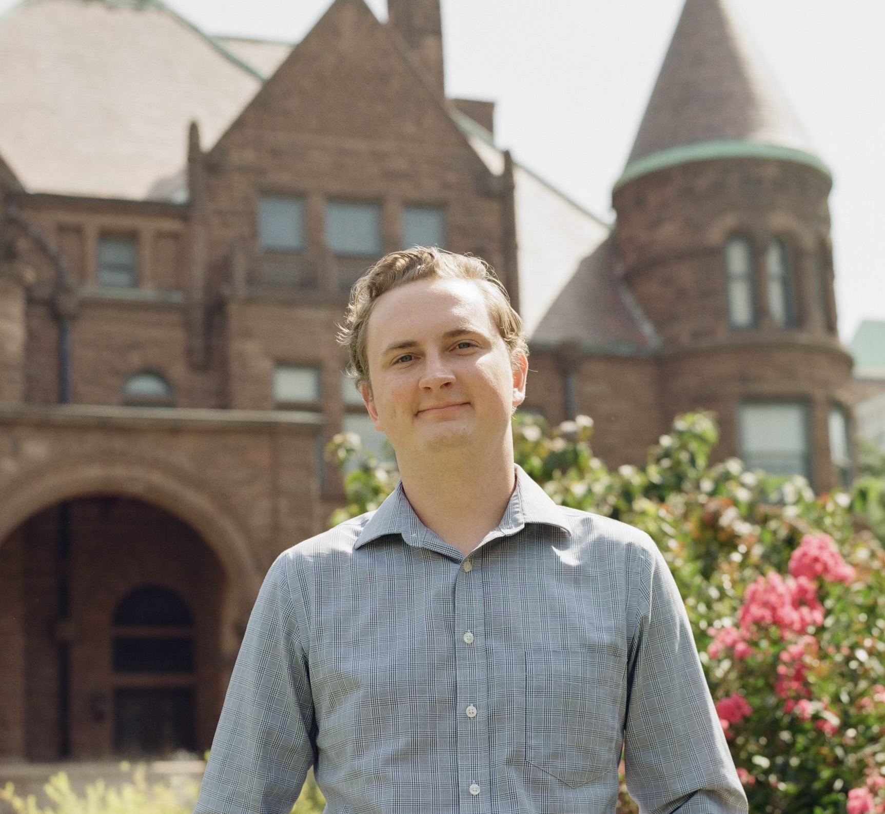

Jack Conrad Friedrich
Work Psychologist · People Analyst · Researcher
PhD in Industrial-Organizational Psychology · Bern, Switzerland

Work Psychologist · People Analyst · Researcher
PhD in Industrial-Organizational Psychology · Bern, Switzerland
I’m a people analytics professional with a PhD in Industrial-Organizational (Work) Psychology. Alongside my research background, I bring several years of human capital consulting and applied data science experience. I currently live in Bern, Switzerland, and hold a B permit with full authorisation to work.
I chose work psychology because I care about understanding what helps people experience healthy, fulfilling lives at work, and what does the opposite. I also chose it because it gives me a strong skillset across every stage of answering a given question, from framing it to measuring it to acting on what I find. This allows me to work on “whole pieces of work” where I can understand how all the parts of a question or problem fit together. I believe this also makes me an asset in informing organisational people strategy and decisions.
My consulting background has taught me how to dig deeper into a given organisational challenge and identify the true question. From there, I have developed knowledge of the tools to measure and investigate that question, such as survey design and data analysis or analysing open-ended text data with natural language processing. I also have experience moving beyond one-off projects to maintain and improve ongoing measurement work. Throughout, I have learned to present and interpret results for stakeholders and fold in my own knowledge from work psychology, so that the findings optimally inform organisational decisions.
Over the last two years, I worked as a data scientist at Nestlé Purina, where I owned analytics projects end-to-end, from scoping research questions and clarifying stakeholder goals, to building forecasting models and analytics pipelines, to translating results into actionable recommendations. I worked across functions in an internal consulting capacity, with a tech stack including Power BI, R, Python, PySpark, and Databricks. Outside of Purina, I’ve consulted throughout my PhD on employee experience measurement, organisational development, and leadership strategy, including leading data analysis for engagement surveys, facilitating focus groups on climate and culture, and supporting workplace mentoring programme implementation and assessment.
On the research side, my doctoral work examined how employees talk about electronic performance monitoring in online workplace communities, drawing on a corpus of roughly 33,000 posts and combining machine learning classification, topic modelling, sentiment analysis, and time series methods. My master’s thesis took a different angle: I surveyed 1,200 organisational researchers about their use of, and attitudes toward, questionable research practices. That study reflects my values as a scientist, namely pushing for rigour and credibility in my field.
Outside of work, you’ll mostly find me spending time with my wife in Bern, where we share a flat with my orange cat, Todd. We love exploring Switzerland together and trying out new cafes and restaurants. I try to maintain an active lifestyle, making time for running or the gym, but outside of that I enjoy playing Nintendo games at home, playing around with Claude Code, and watching whatever new films are out.
I’m currently looking for my next role in people analytics or human capital consulting within Switzerland. If you’re building a team that works on hard and interesting questions about people at work, I’d be glad to connect.
Get in touch: jackcfriedrich@gmail.com
More than Perverse Incentives: Questionable Research Practices in the Organizational Sciences
Saint Louis University · Expected May 2026
[Describe your dissertation here in your own words — what you studied, what you found, why it matters.]
Funded by the Dustin Jundt Legacy Student Thesis & Dissertation Fund ($300) and the Knoedler Student Research Funds ($500), Saint Louis University.
Coles, N. A., Tenney, E. R., Chin, J. M., Friedrich, J. C., O'Dea, R. E., & Holcombe, A. O. (2024). Team scientists should normalize disagreement. Science, 384(6700), 1076–1077.
Rudolph, C. W., Friedrich, J. C., Koziel, R. J., & Zacher, H. (2025). Character strengths use at work: A meta-analysis of relations with work performance and employee wellbeing. Applied Research in Quality of Life.
Giancola, J. K., Webster, I. D., Friedrich, J. C., & Burroughs, T. E. (2025). Development of a mentee behaviour scale for workplace mentoring partnerships. International Journal of Evidence Based Coaching and Mentoring, 23(1), 284–299.
Cobb, H. R., Friedrich, J. C., & Thomas, C. L. (2023). Opening up: Using our science to improve science. The Industrial-Organizational Psychologist, 60(1), 18–23.
Friedrich, J. C., Koziel, R. J., Zacher, H., & Rudolph, C. W. (2022). Work ability mediates the relationships between personal resources and work engagement. Merits, 2(4).
Full publication list and conference presentations available on request.
[Add a sentence or two about your consulting approach — what makes you distinctive, what you offer.]
Leadership Measure Development · April–August 2024
Developed evidence-based survey measures for two novel leadership constructs (organisational resilience, and leadership mindset and capability of strategic renewal) for integration into RGA's annual employee engagement survey.
Mentoring Program Evaluation · 2023–2024
Conducted needs analyses, analysed data, and prepared formal consulting reports for mentoring programmes across two departments (Internal Medicine and Pediatrics). Also facilitated strategic planning sessions and contributed to scale development work that became a peer-reviewed publication.
DEI Analysis & Workshop Facilitation · 2023–2024
Conducted quantitative analyses for an annual DEI report for a large UK-based organization, facilitated focus groups aimed at improving organizational climate, and co-delivered Introduction to DEI workshops.
Associate Data Scientist · 2024–Present
Building time-series forecasting models in Azure Databricks, Power BI dashboards for business stakeholders, and survey infrastructure supporting consumer and market insights across the pet care category.
Stack: R (tidyverse), Python (PySpark, Pandas, NumPy), Azure Databricks, Power BI, Qualtrics.
For consulting enquiries: jackcfriedrich@gmail.com